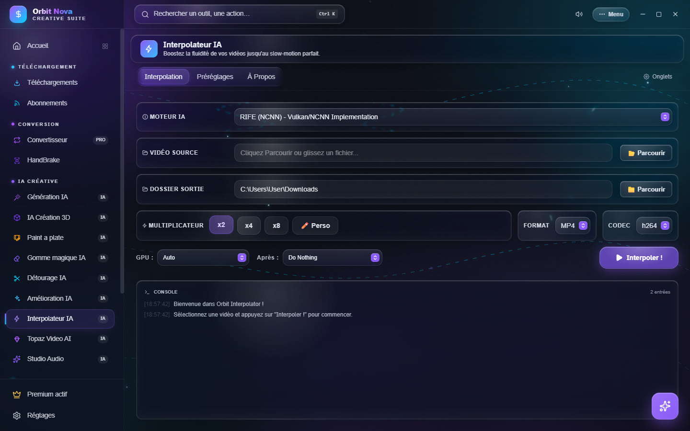
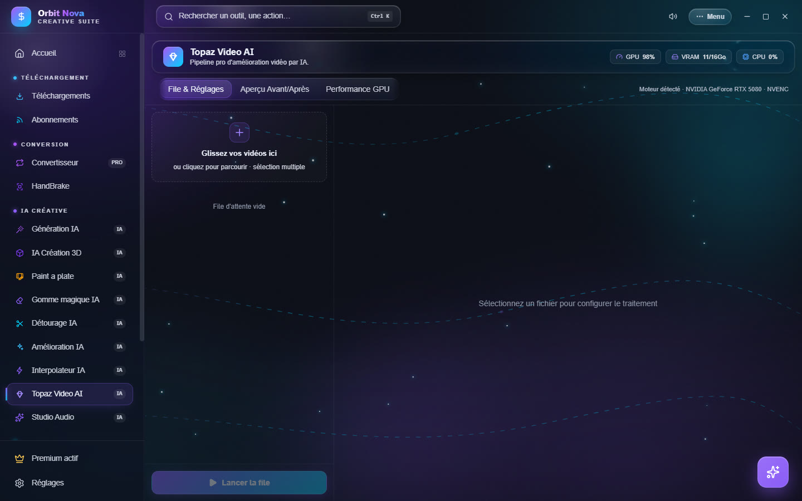
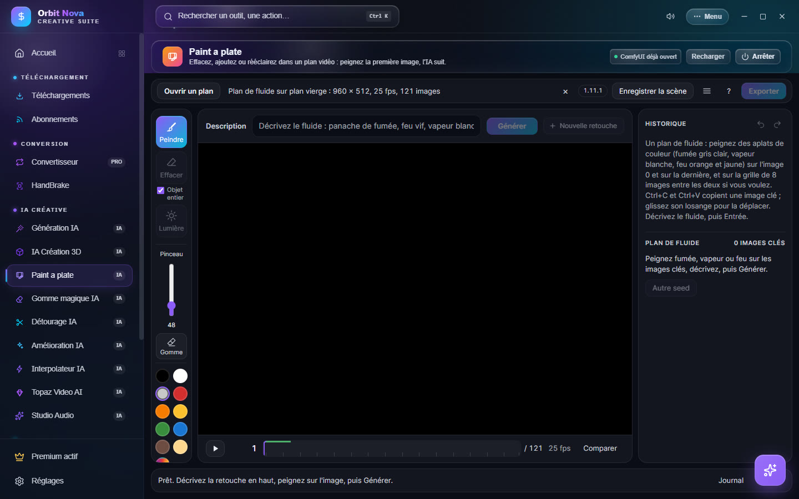
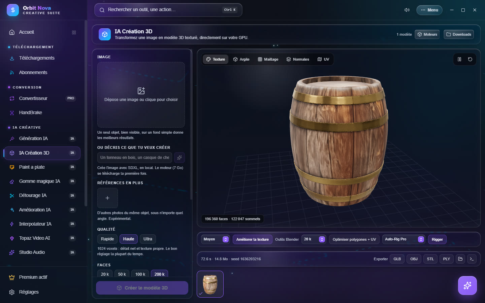

IA pour la vidéo et la 3D
Interpolateur IA
Rend une vidéo plus fluide en inventant les images manquantes : 30 i/s devient 60, 120 ou 240 i/s, ou un ralenti parfait. Fait partie d'Orbit Premium.


- Vidéo Source : Parcourir ou glissez un fichier.
- Dossier Sortie : où enregistrer le résultat.
- Multiplicateur : ×2, ×4, ×8 ou Perso ; puis le Format et le Codec.
- GPU : la carte à utiliser ; Après : ce qu'Orbit fait à la fin (rien, ouvrir le dossier…).
- Cliquez Interpoler ! ; la Console suit chaque étape (extraction, interpolation, recomposition).
L'onglet Préréglages propose des réglages prêts : RIFE x2 - Optimisé anime, RIFE x2 - Qualité lossless, RIFE x4 - Ralenti x0.5, RIFE x4 - 120FPS, RIFE x2 → GIF, RIFE x8 - 240FPS. Le moteur RIFE fonctionne avec toutes les cartes graphiques récentes (Vulkan) et se télécharge la première fois.
Topaz Video AI
Pilote votre installation de Topaz Video AI depuis Orbit, avec une file d'attente et un aperçu avant/après. Topaz Video AI doit être installé et activé sur votre PC (licence Topaz). Fait partie d'Orbit Premium.


Orbit détecte Topaz tout seul (Moteur détecté) ; sinon, Relancer la détection. Les réglages reprennent ceux de Topaz : Amélioration & Upscale (modèle IA, échelle, réduction de compression, détail, netteté, bruit, dehalo, grain), Interpolation d'images (images par seconde, ralenti), Stabilisation (force, secousses, rolling shutter) et Export.
Paint a plate
Retouchez un plan vidéo en peignant sa première image : effacer un objet, en ajouter un, changer la lumière ou ajouter de la fumée, du feu, de la vapeur. L'IA applique la retouche sur tout le plan.


Installer
Paint a plate s'appuie sur ComfyUI et sur le pack open source Paint a plate (AInVFX). L'onglet guide l'installation :
- Dossier ComfyUI : choisissez un ComfyUI existant, ou Installer ComfyUI (version portable officielle, environ 2 Go).
- Token Hugging Face (
hf_…) : certains modèles en demandent un. Créer un token ouvre la page Hugging Face ; collez-le ensuite dans le champ. Il reste sur votre PC. - Installer ce qui manque : les modèles principaux (environ 61 Go), dans le dossier de ComfyUI. Les modèles optionnels ajoutent les plans de fluide (0,65 Go) et le passage SDR vers HDR (1,3 Go, licence à accepter sur Hugging Face).
- Lancer Paint a plate.
Il faut une carte NVIDIA avec 16 Go de mémoire vidéo pour un usage confortable. Les Options de lancement de
ComfyUI permettent de limiter la mémoire utilisée (par exemple --reserve-vram 4 --cache-ram 16 sur une
carte de 16 Go). Le bouton Arrêter coupe ComfyUI et libère la mémoire vidéo.
Retoucher un plan
- Ouvrir un plan : choisissez la vidéo. Le format, la cadence et le nombre d'images s'affichent en haut.
- Choisissez l'outil : Peindre (ajouter ou remplacer), Effacer (avec Objet entier pour sélectionner tout l'objet d'un clic) ou Lumière (rééclairer).
- Peignez sur l'image, puis écrivez la Description de la retouche et cliquez Générer.
- Comparez avec Comparer, lisez le plan avec la barre du bas, puis Exporter : la vidéo garde le format de la source (codec, cadence, timecode).
Pour un plan de fluide (fumée, vapeur, feu), peignez des aplats de couleur sur l'image 0 et sur la dernière, décrivez le fluide, puis Générer. L'historique, à droite, garde chaque essai ; Autre seed relance une variante.
IA Création 3D
Transforme une image en modèle 3D texturé, directement sur votre carte graphique (moteur TRELLIS.2). Outil gratuit.


Installer
Il faut une carte NVIDIA. La première fois, cliquez Installer le moteur : Orbit installe Python, PyTorch et les bibliothèques, puis les modèles (plusieurs Go). Vous pouvez continuer à utiliser Orbit pendant l'installation ; si elle est interrompue, elle reprend là où elle s'était arrêtée.
Créer un modèle
- Déposez une Image : un seul objet, bien visible, sur un fond simple donne les meilleurs résultats. Pas d'image ? Décrivez l'objet (« un tonneau en bois ») et cliquez Créer l'image (SDXL en local).
- Références en plus (expérimental) : d'autres photos du même objet sous d'autres angles.
- Réglez la Qualité (Rapide, Haute, Ultra) et le nombre de Faces. Avec moins de 20 Go de mémoire vidéo, la résolution est réduite automatiquement si besoin.
- Options : Générer la texture (désactivée = géométrie seule, bien plus rapide), Retirer le fond, Remaillage propre, taille de texture, étapes, seed.
- Cliquez Créer le modèle 3D. Comptez une à trois minutes selon la qualité.
Voir, améliorer, exporter
L'aperçu tourne le modèle sous tous les angles, avec plusieurs vues : Texture, Argile, Maillage, Normales, UV. Ensuite :
- Améliorer la texture : ajoute du détail avec FLUX.2 klein, sans changer les couleurs ni la forme (15 Go à télécharger la première fois ; intensité Léger, Moyen, Fort) ;
- Optimiser polygones + UV : un maillage bien plus léger qui garde l'aspect ;
- Rigger : ajoute un squelette avec Rigify (automatique) ou votre propre Auto-Rig Pro (Blender installé requis), puis Ouvrir le rig dans Blender ;
- Exporter : GLB, OBJ, STL, PLY, ou FBX riggé (squelette, poids et textures pour Unity ou Unreal).
Toutes vos créations restent dans la galerie en bas de l'écran.